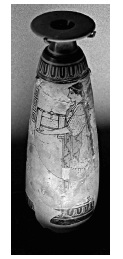

ŞEKİL 88. İÖ 500 dolayına tarihlenen, üzerinde bir kadın resmi bulunan,
alabastrondan bir Attika pomat kabı (British Museum, Londra).3
Fenikeli tüccarlar Çin’den kâfurun, Hint’ten tarçın, biber ve sandal ağacının dışalımını yaparlarken Suriyeliler Arabistan’a kokulu malzemeler getiriyordu. Gerçek mür ve günlük, Yemen’den Akdeniz’e, İranlı tüccarlar tarafından İÖ 300’lerde getirilmiştir. Talep üzerine ticarî mal akışına gül, eyirotu, süsen kökü, nergis, safran, sakız, meşe yosunu, tarçın, kakule, biber, küçük hindistancevizi, zencefil, hintsümbülü, sarısabır odunu, otlar ve sakız reçineleri da katılmıştır.5
Kommagene Kralı Antiokhos IV. Epiphanes (yön. İÖ 175-163), Daphne’deki (Antakya’da bugünkü Harbiye) yazlık sarayında kutladığı bir festivalde koku şenlikleri düzenlemiş, altın tabaklarda tatlı reçineler yakılmış, güzel kız ve erkek çocukları konuklara altın güğümlerden gülsuyu serpmiş, altın kâselerde 15 çeşit parfüm içeren merhemler konukların kullanımına sunulmuştur.150
Roma çağının ünlü karışımlarından biri, parfüm olmasının yanı sıra idrar söktürücü ve kadınlarda ateş düşürücü ilaç olarak kullanılan bir madde olan “susinon” ile hazımsızlık ve basura karşı ve de âdet kanamasını kolaylaştıran bir madde olarak “amarakinon” içeriyordu. Benzer şekilde hintsümbülü yağı, öksürüğe ve gırtlak iltihabına (larenjitis) karşı kullanılıyordu.5
‘Krem’, ‘yağlı krem’ ve ‘yağlı parfüm’ arasında kesin bir ayrım yoktur. Günümüzde krem olarak, vücut sıcaklığında plastik şekillenebilir özelliğe sahip olan jeller nitelenmektedir. ‘Yağ’ sözcüğünden ise suda çözünmeyen, susevmez (hidrofob), oda sıcaklığında sıvı olan organik bileşikler anlaşılır ve onların genel karakteristikleri kimyasal bileşimlerinden değil, fiziksel kıvamından ileri gelir. Doymuş ve doymamış yağ asitli gliseridlerin söz konusu olduğu hayvansal ve bitkisel yağların yanı sıra uçucu (eterik) yağ diye adlandırılanlar da vardır ve bunlar içlerinde farklı kimyasal bileşimlerde güzel kokan ve uçucu olan bitkisel koku maddeleri içerirler.
Uzun süre kokacak preparat hazırlamak üzere uçucu aroma maddelerini katı ve sıvı yağlara bağlamak, Ortadoğu’nun bir buluşudur. Böylece insanlar kokuları, tütsü örneğinde olduğu gibi kızgın odun kömürü üzerinde ısıtarak serbest hale geçirmekten vazgeçip katı ve sıvı yağlara emdirilen derişik koku karışımları halinde üreterek cildi daha uzun süre güzel koku yayar hale getirdiler.
Şiddetli güneş ışınlarına, toz-toprağa, haşarata ve cilt kurumasına karşı hayvansal katı yağlar ve bitkisel yağlar uzun bir geçmişten beri kullanılmaktaydı. İnsan cildinin doğal ince yağ tabakası aşırı iklim koşullarında korumaya yeterli değildi ve suyla yıkadıktan sonra cildin sürekli olarak katı ve sıvı yağlarla yağlanarak ona esnekliğini yeniden kazandırmak gerekiyordu. Yıkamada kullanmak üzere sabun ve temizlik malzemelerinin bulunmadığı dönemlerde cilt, yağsever (oleofil) kir parçacıklarından yalnızca mekanik yolla (ovuşturarak) temizlenebiliyordu. Suyu kıt olan bölgelerde temizleme etkisi, derinin üzerinde biriktirdiği yağsever kirler, deri artıkları, ter vb.den oluşmuş koruyucu tabaka kazınıp soyulmak suretiyle sağlanabiliyordu. Katı ve sıvı yağların sıcağa ve soğuğa karşı vücudun ısı iletimini zayıflattığı Antikçağ’dan beri biliniyordu. Bu nedenlerle her bir krem ve yağın, vücudu koruyucu ve temizleyici etkisi büyüsel-dinsel bir anlamda ve törensel bir işlevle kullanıma girdi.
Bu konuda çağdaş görüşe de uygun olan ve İÖ 3. binyıldan Galenos’un çağına dek Mısır’dan Mezopotamya’ya dek uygulanmış olan yöntem en uygun yöntem olup, belirli koşullar altında uçucu yağları ve yağsever boyarmaddeleri dikkatlice ısıtıp en yüksek verimle organik sıvı evresine çekmek olmuştur. Bu amaçla ilkin, toplanıp kurutularak saklanan bitki kısımları temizleniyor, ufaltılıyor ve elenerek tatlı su içine atılıyordu. Bu katı asıltı ara sıra karıştırılarak bir gece bekletiliyor ve bu çamursu karışıma sıvı ya da katı yağ eklenip, kabın ağzı kapatılarak düşük bir ateş üzerinde günler boyu yavaşça kaynatılıyordu. Burada buhar damıtması yoluyla bitkinin hücre çeperlerinden dikkatli ve etkin bir şekilde uzaklaştırılan aroma maddeleri yağ evresinde çözünüyordu. Özütleme işlemi bittikten sonra -”karışım şiddetle köpürmeye başladığında”- eklenen tuz, krem ve yağın kalımlılığını artırmaya yönelikti. Tuz, yağsever (oleofil) evrede çözünmemekte ve bu nedenle de cilt üzerinde olumsuz bir etki yapmamaktadır.
Kremlerin hazırlanmasında kullanılan sıvı yağlar bölgeden bölgeye değişiyordu. Mısırlılar kendi ürettikleri hintyağından yararlanıyorlardı. Zeytinyağı sınırlı miktarda elde ediliyor ve kozmetik amaçlara uygun düşmüyordu. Değerli ban ağacı (Mısır söğüdü) yağı Suriye’den ithal ediliyordu. Anadolu’da, Yunanistan’da ve hattâ Roma’da kullanılan susam yağı ise Mezopotamya’dan ithal ediliyor ve büyük önem taşıyordu. Kremlerin temeli olarak hayvansal yağların kullanılması da bölgeye ve hayvan varlığına göre değişmekteydi. Kurbanlık hayvanlardan elde edilen ve dinsel törenler için kremlerin hazırlanmasında kullanılan içyağının (donyağı) yanı sıra kazyağı ve tereyağı da kullanılmaktaydı.
Tarihin ilk grevlerinden biri, İÖ 1167 yılında Mısır’da gerçekleşmiş, Thebes (Teb) kentinde bir tapınak inşaatında çalışan işçiler, kendilerini güneş ışınlarına karşı koruyacak merhemlerin dağıtılmaması nedeniyle iş bırakmışlardır.